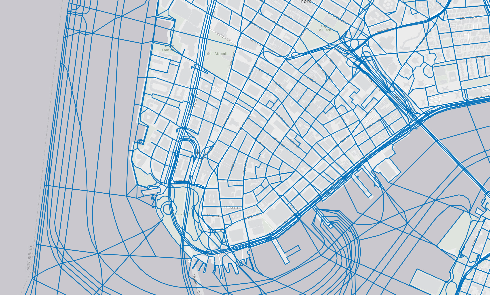
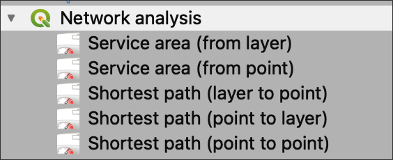
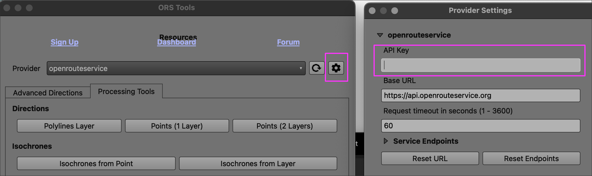

Class 11 Lecture Demonstration Lab
Spring 2026 | UENV 3200 - CRN 11009 + UURB 3210 - CRN 111008
🌡️ Part I Demonstration Lab — Interpolation & Density Surfaces
🎯 Overview
This lab focuses on surface interpolation, a core raster-based method used to transform discrete point data into continuous spatial representations.
You will work with NYC vehicle crash data to generate a density surface, revealing spatial patterns that are not immediately visible in the raw point dataset.
📊 Data
Source dataset:
Vehicle Crash feed at Open Data NY


🧠 Concept: Why Interpolation?
There are two primary purposes of surface interpolation:
1. 🔍 Reveal Spatial Patterns
- Raw point data often appears random or noisy
- Interpolation helps uncover hidden spatial structure
2. 🌊 Create Continuous Surfaces
- Fill in values between known data points
- Smooth variation across geographic space
👉 In doing so, interpolation: - sacrifices exact point precision
- produces a generalized, predictive surface
📏 Step 1 — Define Search Radius
Before running a density surface, you must define a search radius.
- This represents the distance from each raster cell outward
- Determines how far surrounding points influence each cell
👉 For this dataset: - Optimal radius = 582 feet
🎥 Optional: Learn About Optimal Bandwidth (hopt)
- Video Tutorial for Optimal Bandwidth (hopt) calculation:

🛠️ Step 2 — Generate Density Surface
Use the built-in QGIS tool:
🔧 Heatmap (Kernel Density Estimation)


⚙️ Parameters
- Input layer →
MVC_11_8_2019
- Radius →
582
- Pixel Size X/Y →
100
- Output value →
Raw(accident count per pixel)
- Kernel Shape →
Quartic(default)
- Weights → None
👉 Note: - Data is projected in NY State Plane (Feet) - All distances are in feet
🗺️ Step 3 — View Output

The result is a continuous raster surface representing crash density.
🎨 Step 4 — Symbolize the Surface

- Apply Spectral color ramp
- Invert colors → high values = red
- Set Cumulative Cut → 2–98%
- removes extreme low values
🛰️ Step 5 — Contextualize with Basemap

- Apply 50% transparency
- Overlay on ESRI Satellite basemap
🔍 Step 6 — Interpret Results
The interpolation surface reveals patterns not visible in the raw data.
🧭 Key Observations:
- Crash density aligns with:
- Bridges
- Tunnels
- Major corridors
- Bridges
📍 Lower Manhattan

📍 Midtown

📍 Uptown (George Washington Bridge)

🧩 Key Takeaways
- Point data alone can obscure spatial patterns
- Interpolation creates continuous insight from discrete inputs
- Kernel density is a powerful tool for:
- hotspot detection
- risk visualization
- urban analysis
- hotspot detection
📚 Further Reference — Interpolation & Density Surfaces
🔥 QGIS Heatmap / Kernel Density (Core Method)
QGIS Documentation — Heatmap (Kernel Density Estimation)
https://docs.qgis.org/latest/en/docs/user_manual/processing_algs/qgis/interpolation.htmlQGIS Training Manual — Raster Analysis & Heatmaps
https://docs.qgis.org/latest/en/docs/training_manual/processing/raster_analysis.html
🧠 Conceptual Understanding (Density + Interpolation)
What is Kernel Density Estimation (KDE)?
https://en.wikipedia.org/wiki/Kernel_density_estimationESRI Guide — Understanding Density Analysis
https://pro.arcgis.com/en/pro-app/latest/tool-reference/spatial-analyst/how-kernel-density-works.htm
🛠️ Step-by-Step QGIS Tutorials
QGIS Heatmap Tutorial (Points to Density Surface)
https://www.qgistutorials.com/en/docs/3/creating_heatmaps.htmlInterpolation in QGIS (IDW Method)
https://www.qgistutorials.com/en/docs/3/interpolating_point_data.html
📏 Bandwidth (Search Radius) Concepts
Bandwidth Selection in KDE (Conceptual Guide)
https://en.wikipedia.org/wiki/Kernel_density_estimation#Bandwidth_selectionPractical Explanation of Search Radius in Density Mapping
https://gisgeography.com/kernel-density-estimation/
🛣️ Part II: Network Distances

The graphic above compares two important ways of measuring distance. Euclidean distance measures straight-line distance “as the crow flies,” while Manhattan distance measures movement along a grid. In GIS, network distance is closely related to Manhattan distance in concept, but more realistic in practice: it follows actual connected streets, paths, or routes and can also incorporate travel mode, speed, and time.
In NYC, the LION Dataset is often used as the ‘network’ upon which distance can be calculated:
LION: A single line street base map representing the city’s streets and other linear geographic features such as shorelines, surface rail lines and boardwalks, along with feature names and address ranges for each addressable street segment.

🎯 Overview
In this part of the lab, you will explore how network distance differs from straight-line distance. Rather than measuring from one point directly to another through open space, network analysis measures travel along connected streets and paths.
You will complete two tasks:
- Create a simple route from one point to another in New York City
- Generate isochrones from a point outward based on:
- travel mode
- travel speed
- resulting travel distance / travel time
This process is especially useful for understanding access, mobility, and service coverage in urban environments.
🧠 Concept: Different Types of Distance
Before beginning, it is important to understand that there is more than one way to measure distance in GIS.
📏 Euclidean Distance
- Straight-line distance
- Fast to calculate
- Useful for simple proximity analysis
- Does not account for streets, barriers, or travel routes
🧱 Manhattan Distance
- Distance measured along horizontal and vertical paths
- Often used to describe movement through gridded street systems
- A simplified version of movement through built environments
🛣️ Network Distance
- Distance measured along actual connected routes
- Uses streets, paths, or transit corridors
- Can account for:
- one-way travel
- route connectivity
- travel speed
- travel time
- travel type (walk, drive, bike)
👉 In cities, network distance is often more realistic than Euclidean distance because people move through infrastructure rather than across open space.
📦 Data & Setup
Before you begin, make sure you have:
- A street network or routing tool available in QGIS
- A starting point and destination point within NYC
- A projected coordinate system or web routing workflow ready to use
You may use:
- A local street centerline dataset
- OpenStreetMap street data
- A routing plugin or service available in QGIS
📍 Step 1 — Add Your Origin and Destination Points
Create or load two point locations in New York City:
- Origin = your starting location
- Destination = your ending location
These can be: - landmarks - subway stations - schools - parks - intersections - any two locations of interest
👉 Keep the points within the same borough or nearby area for a simple first test.
🗺️ Step 2 — Load the Street Network
Add the street network layer that will be used for routing.
This network should consist of connected street line features that can support route calculation.
✅ Check the following:
- The streets are visible in the map
- The layer is in the correct area
- The streets appear connected
- Your origin and destination points are close to the network
👉 A network analysis will only work correctly if the road lines are connected well enough to support movement from one point to another.
🧭 Step 3 — Generate a Point-to-Point Route
Use the route or shortest path tool in QGIS to calculate a route from your origin to your destination.

🔧 Goal
Create the best route between two known points using the street network.
In general, you will:
- choose the street network as the input layer
- choose the origin point
- choose the destination point
- define the route based on:
- shortest distance
- or fastest travel time
🚶🚴🚗 Step 4 — Choose a Travel Mode
Next, think about how travel type changes accessibility.
Common travel modes include: - walking - biking - driving
Each mode affects: - available routes - travel speed - area reached within a fixed time
Example travel assumptions:
- Walking = slower speed, smaller reach
- Biking = medium speed, broader reach
- Driving = faster speed, much larger reach
👉 Even when starting from the same point, different travel modes can produce very different accessibility patterns.
Time permitting, also run the Service area (from point) tool prior to the next section - Generating Isochrones
🗺️️ Part III: Isochrones- Distance as Polygons
⏱️ Step 1 — Generate Isochrones
What is an isochrone?
An isochrone is a polygon or boundary showing how far someone can travel from one point outward within a given amount of time.
Examples: - 5-minute walk - 10-minute bike ride - 15-minute drive
🔧 Goal
Generate one or more isochrones using: - a starting point - a travel mode - a travel speed or travel-time threshold
Suggested outputs:
- 5-minute isochrone
- 10-minute isochrone
- 15-minute isochrone
✅ Result
You should get one or more polygons showing reachable space from the origin.
🔌 Step 2 — Install ORS Tools (One-Time Setup)
In QGIS:
- Go to Plugins → Manage and Install Plugins
- Search for:
ORS Tools - Click Install
🔑 Step 3 — Add API Key
- Go to: https://openrouteservice.org/
- Create a free account
- Copy your API key
In QGIS: - Open ORS Tools panel - Paste your API key into settings

📍 Step 4 — Choose Your Starting Point
Use your Origin point from the previous step.
👉 This is the location from which travel will expand outward.
🛠️ Step 5 — Run Isochrone Tool
Open:
👉 ORS Tools → Isochrones → Isochrones from Point
⚙️ Set Parameters:
Input point → your Origin
Travel mode → choose one:
Foot-walkingDriving-carCycling
Range type →
TimeRanges (seconds):
300(5 minutes)
600(10 minutes)
900(15 minutes)
▶️ Step 6 — Run Tool
Click Run
🛰️ Step 7 — Add Basemap Context
Overlay the route and isochrones on a basemap.
This helps you interpret: - which neighborhoods are included - which streets shape accessibility - where barriers or disconnected zones appear
A basemap can make your results much easier to understand spatially.
🔎 Step 8 — Interpret the Results
Review both your point-to-point route and your isochrones.
Consider:
- Which areas are reachable within each travel time?
- How does the reachable area change by travel mode?
- Are some neighborhoods more connected than others?
- Does the shape of the isochrone reflect the street pattern?
- How is this different from a simple buffer?
👉 A standard buffer assumes all directions are equally reachable. An isochrone shows that real access depends on the network.
🧩 Key Takeaways
- Not all distances in GIS mean the same thing
- Euclidean distance is simple, but often unrealistic in cities
- Manhattan distance reflects grid-like movement
- Network distance follows actual travel routes
- Isochrones show how accessibility changes based on:
- route structure
- travel speed
- travel type
- time threshold
📚 Suggested Applications
Network distance and isochrones are useful for projects involving:
- transit access
- walkability
- service coverage
- emergency response
- food access
- school access
- park access
- healthcare accessibility
- urban mobility and inequality
🚀 Looking Ahead
This method can be combined with other GIS approaches from the course.
For example: - compare crash hotspots with network accessibility - measure access to parks in vulnerable neighborhoods - evaluate service coverage in flood-prone areas
👉 Network analysis helps move from where things are to who can reach them and how.
📚 Further Reference — Network Distance & Isochrones
🛣️ QGIS Network Analysis (Core Tools)
QGIS Documentation — Network Analysis (Shortest Path, Service Areas)
https://docs.qgis.org/latest/en/docs/user_manual/processing_algs/qgis/networkanalysis.htmlQGIS Training Manual — Network Analysis
https://docs.qgis.org/latest/en/docs/training_manual/vector_analysis/network_analysis.html
🌐 ORS Tools (Isochrones & Routing in QGIS)
ORS Tools Plugin Documentation
https://giscience.github.io/openrouteservice/documentation/ors-tools/OpenRouteService (ORS) Web Platform
https://openrouteservice.org/ORS API Documentation (Isochrones, Routing, Travel Modes)
https://giscience.github.io/openrouteservice/api-reference/
🧠 Conceptual Foundations — Distance & Accessibility
Euclidean vs Network Distance (Overview)
https://en.wikipedia.org/wiki/Euclidean_distanceManhattan Distance (Grid-Based Movement)
https://en.wikipedia.org/wiki/Taxicab_geometryAccessibility (Urban Planning Context)
https://en.wikipedia.org/wiki/Accessibility
🧭 Isochrones & Service Areas (Concept + Application)
ESRI Guide — Understanding Service Areas
https://pro.arcgis.com/en/pro-app/latest/tool-reference/network-analyst/service-area.htmWhat is an Isochrone? (Clear Explanation)
https://www.mapbox.com/blog/isochrones
🛠️ Step-by-Step Tutorials
QGIS Shortest Path Tutorial
https://www.qgistutorials.com/en/docs/3/shortest_path.htmlCreating Service Areas / Isochrones in QGIS
https://www.qgistutorials.com/en/docs/3/network_analysis.html
🎯 Why This Matters
These tools allow you to move beyond:
- simple proximity (buffers)
and toward:
- real-world accessibility
- movement-based analysis
- who can reach what—and how quickly
👉 Network distance is essential for understanding cities as connected systems, not just static maps.